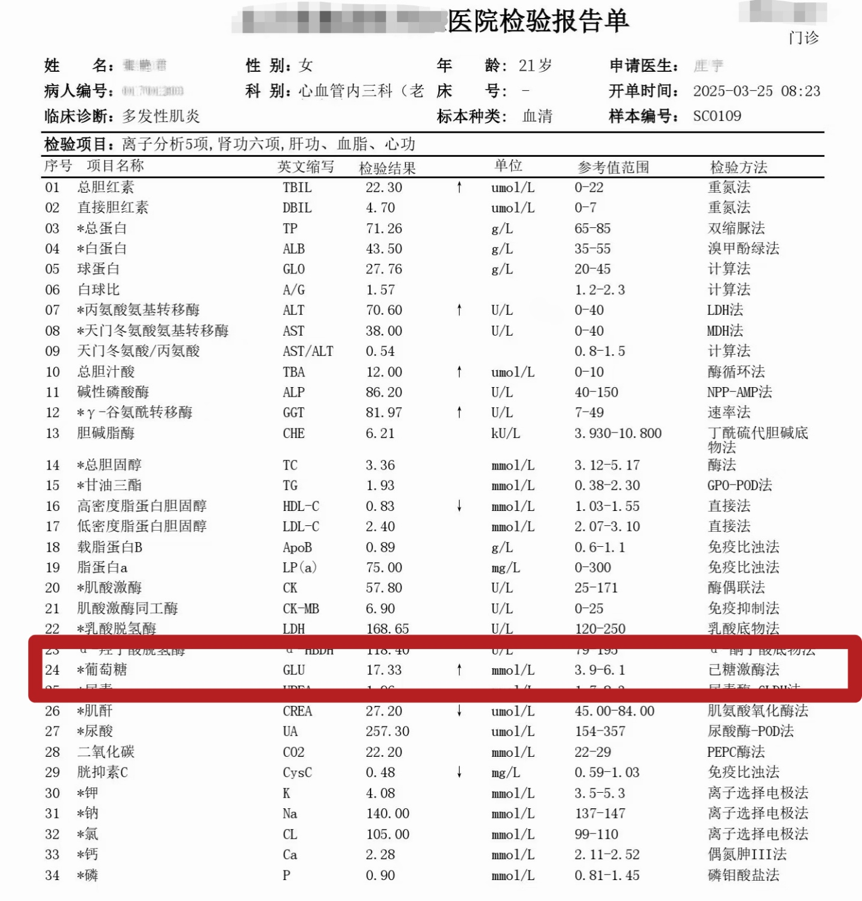
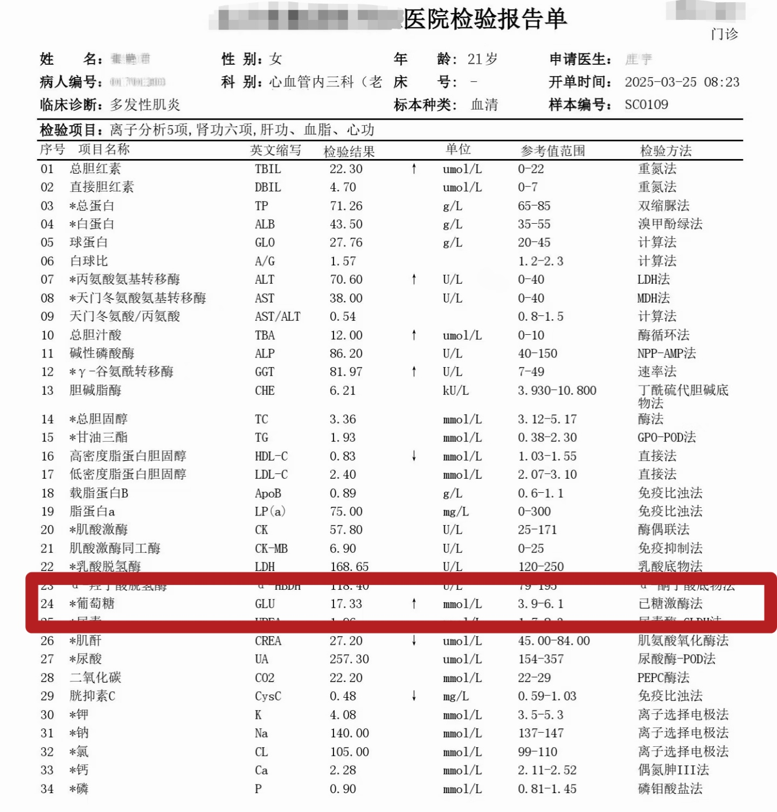

21 岁的小兰（化名），亲手将二型糖尿病“喂”进了身体里。当二型糖尿病的诊断书递到她手上时，这个刚上大学的年轻人清楚地知道，这是自己身体长期透支健康的必然结果。
过去两年，小兰的生活节奏完全脱离了正轨，饮食习惯更是糟糕到了极点。每晚正餐只剩馒头、包子、烙饼这类纯碳水食物，蔬菜几乎从餐桌上消失。直到一次偶然的机会尝到雪媚娘，小兰彻底陷入了甜食的“陷阱”—— 一个月里十几次打卡甜品店。
2024 年下半年，身体开始发出预警信号：频繁口渴到半夜起床喝水，稍微活动就浑身乏力。直到确诊报告摆在眼前，那些被他无视的细节瞬间串联起来，满心只剩追悔莫及。
趋势呈现：
慢性病正在“提前发生”
小兰用不良饮食与侥幸心理“喂”出的糖尿病，从来不是孤立的个体遭遇，而是当代年轻人慢性病蔓延的一个微观注脚。在我们身边，越来越多像她一样的年轻人，正被曾被视为“中老年专属”的慢性病悄然缠上 —— 这种变化并非突然发生，而是一场持续十余年的缓慢蔓延。
接下来，我们通过交互玫瑰图，直观呈现2009年至2023年慢性病患病人群的年龄结构变迁。从数据的动态变化中，你能清晰看到慢性病如何一步步打破年龄壁垒，从以中老年为绝对主体，逐渐向青年群体扩散，最终让年轻人患病占比从 16.4% 攀升至 27.3%，完成从偶然个例到群体风险的转变。
重点疾病：
哪些慢性病最先靠近年轻人？
小兰因长期高糖高碳饮食患上的二型糖尿病，既是她个人健康透支的代价，也是年轻人慢性病高发的具象投射。而2009至2023年年轻人慢性病占比从16.4%攀升至27.3%的背后，绝非单一病种的偶然蔓延，而是多类慢性病跨越年龄壁垒，集体向青年群体侵袭的信号。
当我们看清了“慢性病正向年轻人扩散”的宏观趋势，更需深入追问：这些疾病并非无差别攻击，究竟哪些慢性病最先盯上年轻人？又集中瞄准了我们身体的哪些器官与系统？是被不良饮食拖累的代谢器官，被久坐透支的颈腰椎，还是被熬夜损耗的消化与循环系统？
接下来，我们将从“年龄占比”的宏观视角，转向“身体系统”的微观拆解。通过人体器官的鼠标悬停交互，逐一呈现年轻群体中率先浮现风险的慢性病类型，让抽象的群体数据落地为可感知的身体健康风险图谱，精准捕捉慢病年轻化的具体落点。
人群画像：
得慢性病的群体有何特征
小兰的二型糖尿病并不是孤立的健康意外。结合前文数据与器官风险图谱可见，年轻人慢性病占比14年间从16.4%攀升至27.3%，且集中侵袭多个身体系统，这背后必然对应着清晰的人群特征——这些患病年轻人并非少数“生活习惯极端”的个案，而是分布在社会不同场景中的主流群体。
那么，在性别维度上，是否存在明显的患病差异？城乡不同的生活环境，是否会影响慢病的分布概率？更关键的是，不同职业人群的工作模式差异，如企事业单位职员的久坐、自由职业者的作息不规律，是否与特定慢病的高发直接关联？
所以基于性别、城乡、职业三类核心数据，勾勒出慢性病年轻患者的基本轮廓。通过精准描摹人群画像，进一步印证慢病年轻化已渗透至主流劳动与生活人群，让这场健康危机的影响范围与群体特征愈发清晰。
在年轻化的慢性病人群中，性别差异尤为显著。数据显示，男性患者占比高达 60.6%，女性则为 39.4%，男性患病风险明显更高。这一差异与男性普遍存在的吸烟、过量饮酒、饮食重油重盐等不良生活习惯密切相关，同时男性对健康问题的关注度偏低，往往忽视早期预警信号，直到症状加重才就医，无形中推高了患病风险。
性别分布画像
但女性并非“低风险群体”。研究表明，女性慢性肾脏病（CKD）和糖尿病肾病（DKD）的患病率反而更高，这与女性平均寿命更长、更年期雌激素水平下降导致免疫功能波动有关。更值得警惕的是，女性对吸烟的危害更敏感 —— 吸烟量越高，女性患慢性支气管炎、气道阻塞的风险上升幅度远超男性，重度吸烟女性的呼吸系统死亡风险是男性的两倍左右。此外，女性承担的家务劳动压力、较低的健康保健参与度，也让其面临独特的健康挑战。
打破“慢性病是城市病”的固有认知，乡村青年已成为慢性病年轻化的重点关注群体。数据显示，乡村青年慢性病占比达 57.1%，超过城镇的 42.9%，这是近年来城乡患病率差距缩小后首次出现农村反超。这背后原因复杂、令人深思。
城乡分布画像
城镇化进程中，大量农村青壮年劳动力流向城市，导致农村常住人口老龄化加剧，60岁以上人口占比已比城镇高4.48个百分点；乡村地区健康科普资源匮乏，居民对慢性病认知不足，高油、高盐、高糖的饮食结构和缺乏运动的生活习惯未能及时改善；同时，农村医疗资源可及性较差，早期筛查覆盖面有限，部分慢性病未能得到及时干预，最终导致患病率持续攀升。而城镇地区虽仍有身体活动不足、高脂饮食等风险，但更完善的医疗筛查体系在一定程度上控制了患病增速。
在慢性病的职业分布数据中，数据揭示，企事业单位职员是慢性病人群的核心群体，占比达 61.4%，国家公务员紧随其后，占比 35.4%，而自由职业者、工人、农民合计仅占 3.2%。这恰恰反映出，由于高压的工作节奏、不规律的生活状态，职场人及其容易患慢性病，而且慢性病往往呈现多发状态。
职业分布画像
不同职业的健康隐患呈现鲜明特点：程序员群体中，35岁以下颈椎病发病率高达91%，35-40岁脑卒中风险是普通人的3.8倍，76%从业者日均睡眠不足6小时，熬夜、高强度用脑让睡眠障碍、心理健康问题频发；教师群体长期站立授课、伏案工作，咽喉炎发病率达30%-50%，颈椎病、腰椎间盘突出等职业病困扰着两成以上人群；医护人员虽亚健康发生率相对较低，但频繁轮班、饮食不规律导致的内分泌紊乱、消化系统问题较为突出。此外，代谢综合征如脂肪肝、高血压、高血脂还有胃病、焦虑抑郁等情绪问题，成为多数高压职业的共性健康威胁。
生活方式画像：
谁在让我们身体每况愈下！
小兰对高糖高油食物的失控渴望，对均衡饮食的彻底摒弃，正是她被二型糖尿病盯上的核心症结。这份饮食上的放纵，从来不是专属她的极端选择，而是当代年轻人不健康生活方式的典型写照——就像她深夜依赖碳水、沉迷甜食一样，越来越多年轻人正被各类不良习惯裹挟，而这些习惯绝非孤立存在，往往相互叠加，成为慢性病侵袭身体的“联合推手”。
事实上，除了饮食失衡，熬夜、久坐、吸烟饮酒等行为，也正和小兰的饮食问题一样，渗透在年轻人的日常里。它们看似无关紧要，却悄悄与前文提到的糖尿病、颈腰椎病、胃肠慢病等建立起深层关联，共同构筑起年轻群体的健康风险防线。小兰的案例只是一个缩影，背后是无数年轻人在各类不良生活习惯中，逐渐透支身体的普遍困境。
接下来，我们将聚焦熬夜、不健康饮食、久坐、吸烟与饮酒四种高频生活方式，通过分步点击交互，逐层揭示每种习惯与多种慢性病的明确关联，拆解年轻人慢性病高发的行为根源。

美味背后，是持续累积的代谢负担
健康建议：
请领取你的健康处方单
确诊后的小兰，终于放下了对甜食的执念，一边遵医嘱按时服药、定期监测血糖。小兰开始主动重塑生活方式——告别了深夜的碳水盛宴，换成了粗细搭配的膳食；摒弃了久坐不动的习惯，加入了规律散步的行列，用科学干预一点点拉回失衡的健康状态。
慢性病并非不可控的终身枷锁，药物治疗只是基础，真正的康复与防控，根源在于生活方式的系统性调整。
小兰的经历不是个例，对所有被慢病困扰或处于高危状态的年轻人而言，她的调整方向是正确的、必要的。既然已经明确，熬夜、不健康饮食等不良习惯是慢性病高发的主要推手。与其等到身体发出强烈预警才追悔莫及，不如主动掌握健康主动权。
于是我们基于前文的人群画像、生活方式关联及器官风险分析，提出面向年轻群体的可执行健康建议，助力每个人守住健康防线。
健康处方单
NO. 2024001 | 姓名：小兰
医师签名：数据新闻实验室
日期：2024.12.30
让未来始终拥有健康的底色
小兰用一场糖尿病确诊，为我们揭开了慢性病年轻化的冰山一角。从2009年到2023年，年轻人慢性病占比从16.4%飙升至27.3%的宏观数据，印证了这场健康危机已从“偶然个案”演变为“群体风险”。我们通过器官交互拆解了颈腰椎、胃肠等高发慢病的身体落点，通过人群画像锁定了企事业单位职员、乡村青年等核心易感群体，更通过生活方式分析，揭示了熬夜、不健康饮食、久坐等日常行为与慢病的明确关联，最终给出了可落地的健康处方。
我们希望打破“年轻=身体好”的幻觉，让公众意识到慢性病已是潜伏在当代年轻人生活中的现实威胁。从个体案例到群体趋势，从器官风险到生活诱因，这份报道既是一份健康预警，也是一面折射当代青年生存状态的社会棱镜，既为年轻人提供了健康管理的行动指南，也为公共卫生干预、职场健康管理提供了精准的数据依据。
愿这份基于数据的洞察与建议，能让每一位年轻人都能正视身体信号、主动守护健康，用科学的生活方式，抵御慢性病风险，让未来的人生始终拥有健康的底色。